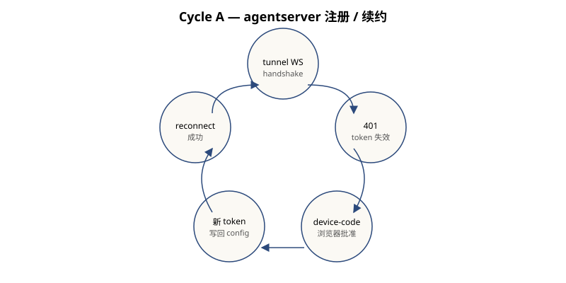
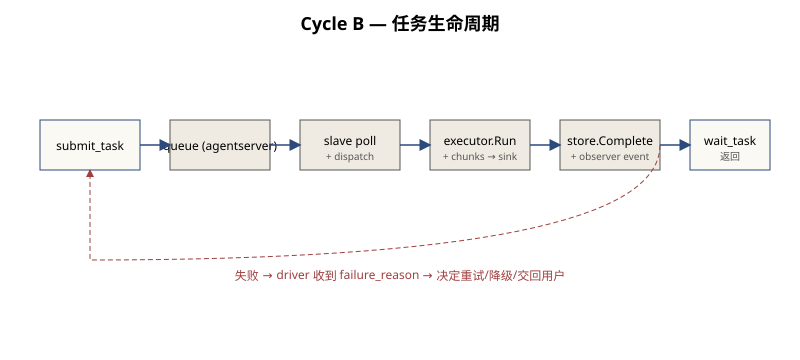
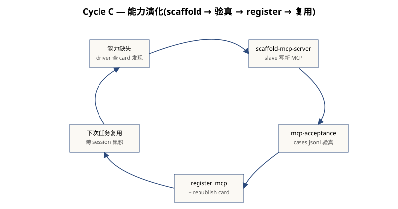
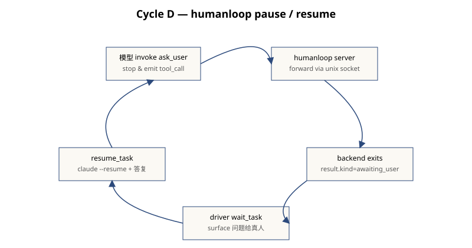

Cycle — 反馈循环视图
四个 cycle 都遵循同一个模式:失败 → 自修复 → 学习。 注册过期就重 OAuth,能力缺失就 scaffold,人介入就 pause-resume。 集群的弹性不是某个单点的容错给的,是 cycle 数量乘出来的。
Cycle A — agentserver 注册/续约循环

失败:slave 的 tunnel_token 服务端被轮换 → WS handshake 401。
自修复:slave 检测到 401 → 触发 OAuth 2.0 Device Authorization Grant[3]
→ 把新的 device-code URL 打到 stderr → 真人浏览器批准 → agentserver 颁新 token
→ slave 把新 token 写回 config.yaml → tunnel reconnect 成功。
学习:新 token 持久化;下次重启不需要再走一遍。
2026/05/26 06:16:34 agentsdk: connecting to https://agent.cs.ac.cn
2026/05/26 06:16:34 agentsdk: tunnel disconnected: 401
2026/05/26 06:16:34 agentsdk: reconnecting in 1s...
...
Open this URL to authenticate:
https://agent.cs.ac.cn/oauth2/device/verify?user_code=ChuX9Nfn
...
2026/05/26 06:17:13 agentsdk: tunnel connected (sandbox: 47d4d7ba-...)Cycle B — 任务生命周期循环

失败:driver 给一个任务但 slave 处理时崩了,或超时。
自修复:agentserver 给 task 标 failed 并写 failure_reason;
driver wait_task 返回失败原因;driver 可以重试、降级、或交回用户。
学习:失败原因和耗时通过 observer 沉淀;后续任务可以根据这些数据做能力规划。
submit_task(prompt="Reply HELLO", target="slave-local-prod", skill="chat")
→ agentserver task_id=task_831eafaf-...
→ slave poll → dispatch → backend.Run
→ backend session_id=33ec8be3-1573-47c0-...
→ store.Complete + observer EventSlaveTaskCompleted
→ driver wait_task returns status:"completed", output:"HELLO"Cycle C — 能力演化循环(本栈最有原创性的一环)

失败:driver 想做 X,但发现没有任何 slave 公告了 X 这个能力。
自修复:driver 命令一个有 register_mcp 能力的 slave 去
scaffold-mcp-server 写一个新 MCP server → 用
mcp-acceptance skill 跑 cases.jsonl 验真 → 通过则
register_mcp 接入 → slave republish AgentCard。
学习:新 MCP 写入 slave 的 dynamic_mcp.yaml 持久化;
下次重启自动加载;后续任意 driver 任意 task 都可以直接调。
这个 cycle 是本栈对"算力封装"立意的最强落地:能力本身被编码成一个可被 discovery/添加/版本化/移除的对象。和其他 multi-agent 框架"tool 是开发期硬编码" 的写法形成本质区别。
Cycle D — humanloop pause/resume 循环

失败:chat 模型跑到一半,需要用户的判断/授权才能继续(比如不确定该写哪个文件)。
自修复:模型调内置 ask_user / request_permission MCP 工具[2]
→ humanloop server 拦截 → 通过 unix socket 把问题透给 chat executor
→ executor 关 stdin,backend 优雅退出 → dispatch 把结果包成
result.kind="awaiting_user" → driver wait_task 返回
status:"awaiting_user" + question + session_id → 用户答复
→ resume_task 起 chat_resume 子任务 →
claude --resume <session_id> 把 "User answered: ..." 当下一个 user turn 喂进去
→ 模型可继续,或再 awaiting_user,或 final。
学习:session_id 由 backend 持久,可以无限多轮;agentserver task 状态机不动。
submit_task → wait_task → status:"awaiting_user" (session_id=53a1de6a-...)
question={kind:"ask_user", "pick a color", ["red","blue"]}
↓ 用户答 "blue"
resume_task(last_task_id, "blue") → 新 task task_d94c1765-... → status:"completed" output:"blue"四个 cycle 的共同模式
| Cycle | 失败 | 自修复 | 学习 |
|---|---|---|---|
| A 注册 | token 过期 (401) | device-code OAuth | 新 token 写回 config |
| B 任务 | backend 崩/超时 | 失败原因回传 driver | 遥测沉淀 |
| C 能力 | 能力缺失 | scaffold + acceptance + register | MCP 持久化到 dynamic_mcp.yaml |
| D humanloop | 模型不确定 | ask_user pause/resume | session_id 跨任务续接 |
这种"每一种失败都对应一种自修复路径"的密度,是本栈在工程上对竞品形成代差的关键。